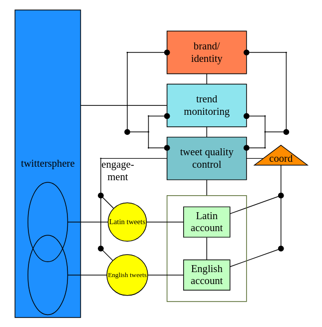

tweeting as a viable system
Written on

Now that we have an idea of what the viable system model (VSM) is all about, let's look at a specific example: tweeting as a viable system.
For our example, suppose I've decided to hire six people to manage my English and Latin tweets (they're all just me of course wearing different hats). Then each of these employees would inhabit a different subsystem of the VSM, as shown in the diagram below.

With this setup, we can illustrate several important features of the VSM:
Each of the bottom subsystems forms a viable system in its own right: Each is an account with a person running it; each could have its own whole VSM diagram. In this way, the VSM structure is said to be recursive.
If these two subsystems are to be part of a coherent whole, they need to be orchestrated in some way; that's the job of the person in the triangular subsystem labeled 'coord.' For example, the two accounts might at times strategically reference each other's tweets; the coordinator would inform the two account operators when such is the case and about other relevant details.
The manager in tweet quality control (who I sometimes consider firing) supports the tweeters by offering ways to increase engagement, which she periodically monitors. She also gives guidance on aligning tweets with the overall brand and identity of the enterprise. It's equally important what she doesn't do: She doesn't go down into the individual subsystems and look over the tweeters' shoulders while they're trying to do their jobs; she doesn't micromanage.
This last point is worth emphasizing. The tweeters need to be able to creatively make tweets and address problems as they come up, which they can't do if they are constantly worried about upsetting management. Also, if the manager is always looking over their shoulders, she is not thinking as much about other things that need her attention. The environment offers a variety of issues to address, and those closest to those issues are usually in the best position to deal with them. They can act effectively only if they are given the autonomy to express their own requisite variety in response to the environment. Only a variety of internal responses can handle the variety offered up by an unruly reality.
Next we have the trend monitor, who looks at the rest of the twittersphere and keeps up with important happenings. Should we consider making video content? That seems to be getting more and more popular. Is Elon Musk going to own Twitter? What changes can we expect? And so on. This job is hugely important lest the whole enterprise become irrelevant in a fast-changing environment.
Finally we have an upper management person in brand/identity. It's tempting to see the VSM as hierarchical, with this top system exerting control down the line and running things. But that would be a mistake! Information travels both upward and downward, and the identity of the whole should be able to change as the organism evolves within its environment.
The upper manager needs to factor in the information from trend monitoring as well as tweet quality control and decide what direction would represent all stakeholders the best and give the enterprise the best chances of continuing to flourish. Who are we? Why are we tweeting? What are we trying to do? These questions are continually revisited and their answers revised in upper management.